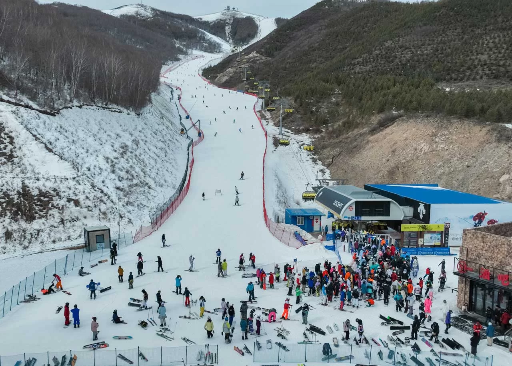
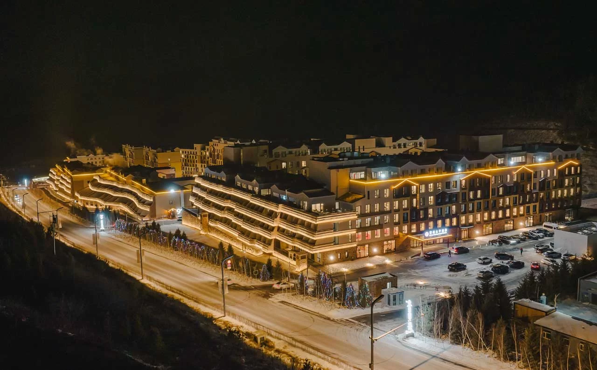
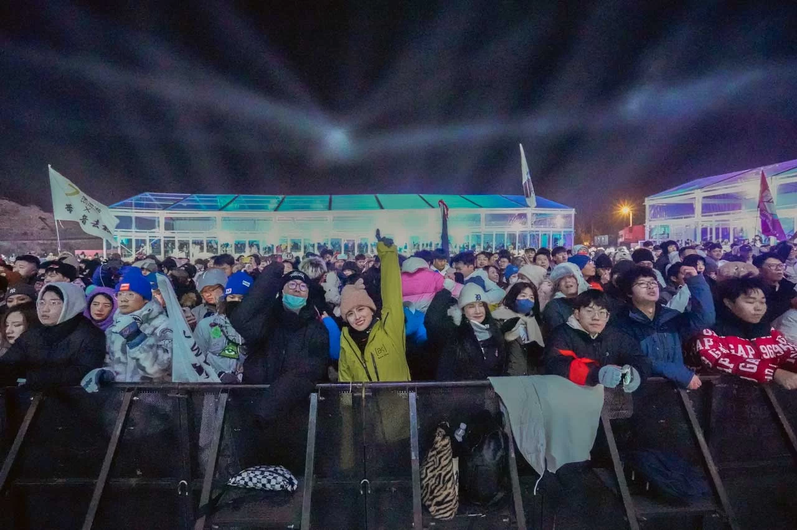
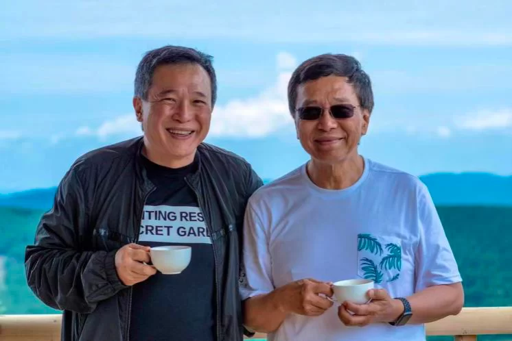

Datuk
Lim
Chee Wah.
FOUNDER & PRESIDENT
Entrepreneurial spirit.
A vision beyond generations.
The youngest son of the late Tan Sri Lim Goh Tong, founder of the Genting Group.

THE STORY
An entrepreneurial
inheritance,
put to work.
A family legacy. An independent vision.
Datuk Lim Chee Wah brings together investment, development and management across tourism real estate, integrated resorts and urban development.
His approach turns ambitious ideas into places with lasting economic and social value. At Genting Secret Garden, that vision helped bring an international winter-sports destination to Chongli.
Alongside business, his philanthropic commitment spans four decades, with a focus on education for the underprivileged.

MILESTONES
From a proposal
to the Olympic
Games.
The milestones behind
Genting Secret Garden.
- 2009
The proposal
Proposed that China bid for the 2022 Winter Olympics, setting a vision in motion alongside Genting Secret Garden.
- 2015
The bid committee
Served as a foreign member of Beijing’s Winter Olympics Bid Committee, contributing to the successful bid.
- 2022
The Games
Genting Secret Garden hosted events at the Beijing Winter Olympics and Paralympics.


Tan Sri Lim Kok Thay
THE PHILOSOPHY
“Striving to be at the edge of our creative limit — is to discover, invent and contribute to human capital and resource development.”
Datuk Lim Chee WahFounder & President, VXL Group
THE VISION, REALISED